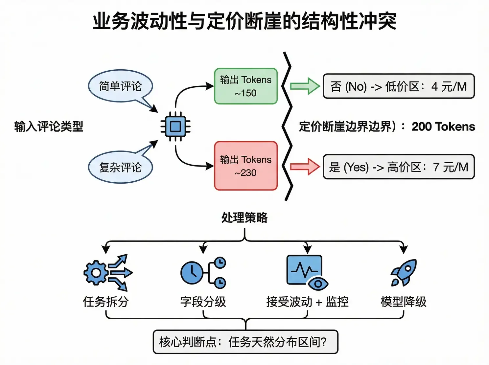

GLM 的短輸出博弈：200 Token 斷崖
觀察 GLM-4.6 的定價結構，會發現一個神奇的設計：它不按輸入長度分檔，而是按輸出長度分檔，分界綫在 200 個 Token。輸出 199 和輸出 201，適用完全不同的價格。
| 指標 | Output ≤ 200 | Output > 200 | 變化幅度 |
|---|---|---|---|
| 輸出單價 | 4 元/M | 7 元/M | +75% |
| 輸入單價 | 1 元/M | 1.5 元/M | +50% |
最容易被忽略的一點：只要輸出超過 200 Token，前面傳入的幾千個 Token 的輸入也要按更高的價格重新結算。輸出多寫兩個字，整單回溯漲價。
這反映了推理算力的邊際成本曲綫。短輸出（<200 Token）非常輕量：Decode 階段壓力小、KV Cache 佔用有限，可能幾十毫秒就完成了。但輸出一旦變長，每多生成一個 Token，KV Cache 就多佔一份顯存，Attention 就多算一輪——成本非綫性增長。
場景：從用戶評論中提取結構化 JSON（sentiment / aspects / pain_points / suggestions）。Prompt 已經很規範，但你無法預知每條評論會提取出多少內容——簡單評論 150 Token，用戶多吐槽兩個點就變 230。拖動滑塊感受這個「結構性衝突」。

| 策略 | 做法 | 代價 |
|---|---|---|
| 任務拆分 | 把提取任務拆成多次調用，每次只提取 1–2 個字段 | 調用次數增加，延遲上升 |
| 字段分級 | 核心字段即時提取，次要字段異步補充或後處理 | 架構複雜度增加 |
| 接受波動 + 監控 | 允許偶發跳檔，但建立監控看整體分佈 | 成本可控但非最優 |
| 模型降級 | 價格敏感的高頻任務切到 Qwen-Flash 等走量模型 | 可能犧牲少量精度 |
核心判斷點是：這個任務的輸出，天然落在哪個區間？如果大部分請求在 100–150、偶發超 200，可以接受。如果分佈中位數就在 180–220，説明任務天然踩在斷崖上——必須重新設計任務粒度，或者乾脆換一個不按輸出分檔的模型。類似的情況也出現在程式碼生成場景：一個 20 行的函式就能輕鬆佔用 100+ Token，稍複雜的修改建議就會突破 200。
GLM-4.6 按輸出長度分檔，200 是斷崖：輸出 +75%，輸入回溯 +50%。
定價結構反映算力成本：長輸出的 KV Cache 與 Attention 開銷非綫性增長，廠商在用價格趕你走短平快路綫。
先看任務的輸出分佈，再選策略。中位數踩在斷崖上的任務，要麼重切粒度，要麼換計費模式不同的模型。
內容來源：整理自作者團隊內部分享《AI Token 降本增效策略分享》「GLM-4.6 的短輸出博弈」。價格為作者當時折後價，請以智譜開放平台即時報價為準。